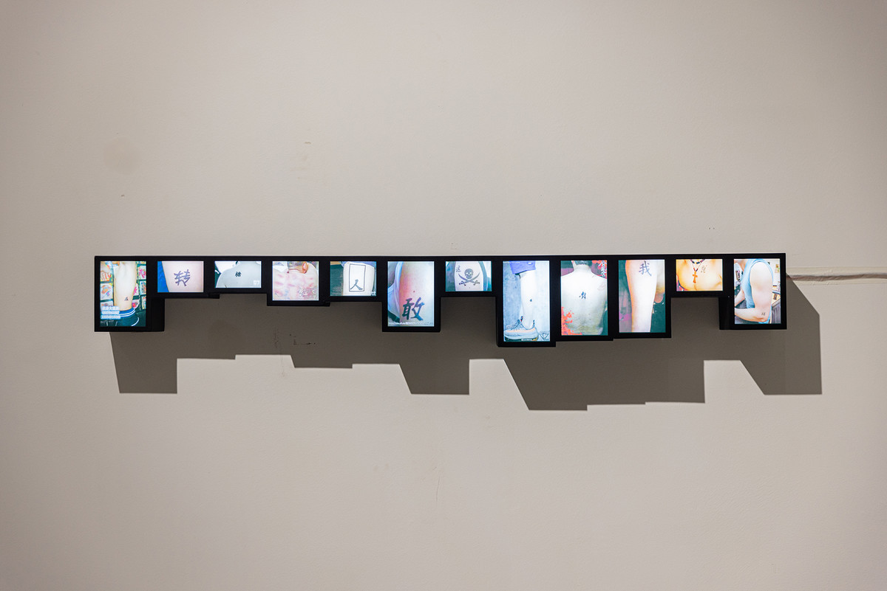
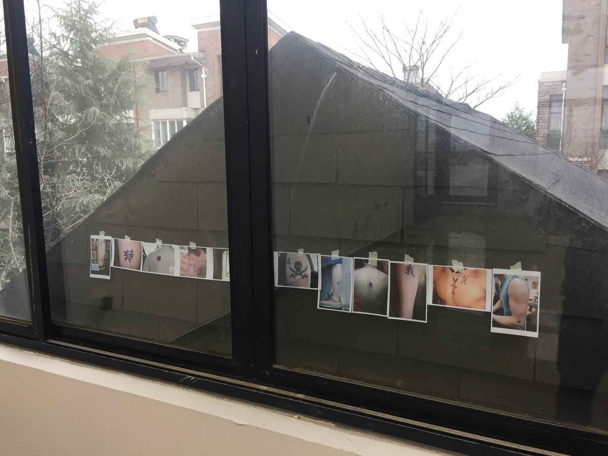
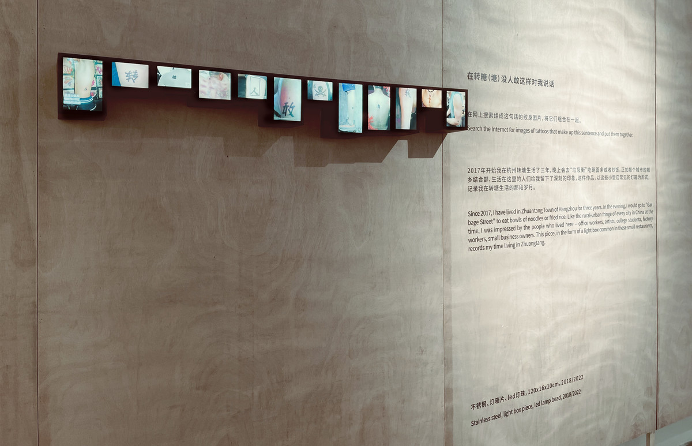
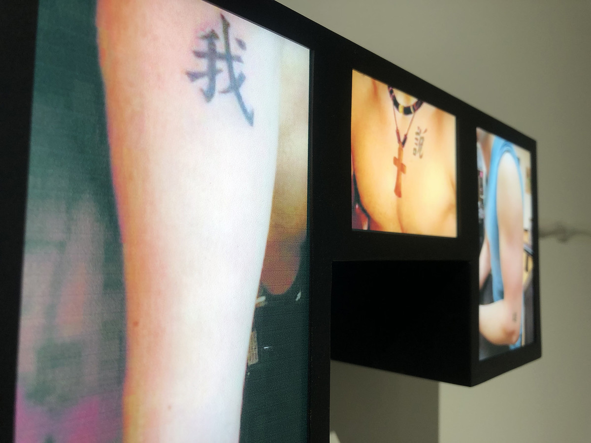

在转糖（塘）没人敢这样对我说话 | NOBODY TALKS TO ME LIKE THAT IN ZHUANTANG

不锈钢、灯箱片、led灯珠，120x16x10cm，2018/2022
Stainless steel, light box piece, led lamp bead, 2018/2022
在网上搜索组成这句话的纹身图片，将它们组合在一起。
Search the Internet for images of tattoos that make up this sentence and put them together.
2017年开始我在杭州转塘生活了三年，晚上会去“垃圾街”吃碗面条或者炒饭。正如每个城市的城乡结合部，生活在这里的人们给我留下了深刻的印象，这件作品，以这些小饭店常见的灯箱为形式，记录我在转塘生活的那段岁月。
Since 2017, I have lived in Zhuantang Town of Hangzhou for three years. In the evening, I would go to "Garbage Street" to eat bowls of noodles or fried rice. Like the rural-urban fringe of every city in China at the time, I was impressed by the people who lived here -- office workers, artists, college students, factory workers, small business owners. This piece, in the form of a light box common in these small restaurants, records my time living in Zhuangtang.

马丁·戈雅的生意，杭州
Martin Goya Business, Hangzhou

金鸡湖美术馆，苏州
Jinji Lake Art Museum, Suzhou

它山艺术中心，苏州
Tashan Art Center, Suzhou